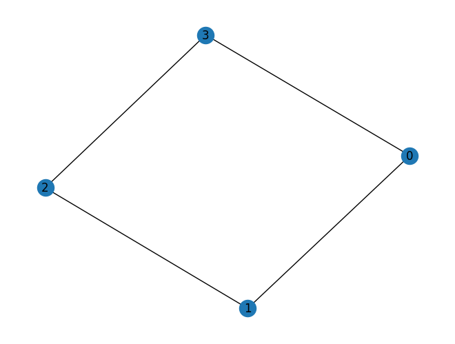

import pennylane as qml
from pennylane import numpy as np
import networkx as nx
import matplotlib.pyplot as pltedges = [(0, 1), (1, 2),(2,3),(3,0)]
G = nx.Graph(edges)
n_edges = len(G.edges)
n_wires = len(G.nodes)
print(f"potrzebujesz {n_wires} kubitów")
nx.draw(G, with_labels=True)
plt.show()potrzebujesz 4 kubitów
def maxcut_hamiltonian(graph):
coeffs = []
obs = []
for (i, j) in graph.edges:
coeffs.append(0.5)
obs.append(qml.PauliZ(i) @ qml.PauliZ(j))
return qml.Hamiltonian(coeffs, obs)H = maxcut_hamiltonian(G)H.wires<Wires = [0, 1, 3, 2]>dev = qml.device('default.qubit', wires = H.wires)
wires = H.wires
def circuit(params):
n_params = int(len(params)/2)
gammas = params[:n_params]
betas = params[n_params:]
# stan początkowy
for i in range(n_wires):
qml.Hadamard(wires=i)
for gamma, beta in zip(gammas, betas):
# cost_h
for (i,j) in G.edges:
qml.CNOT(wires=[i,j])
qml.RZ(-gamma, wires=j)
qml.CNOT(wires=[i,j])
# mixer
for i in range(n_wires):
qml.RX(2 * beta, wires=i)
return qml.expval(H)def cost(params):
return circuit(params)
n_layers = 2
params = np.random.uniform(0, np.pi, size = 2 * n_layers, requires_grad=True)circuit(params)expval(0.5 * (Z(0) @ Z(1)) + 0.5 * (Z(0) @ Z(3)) + 0.5 * (Z(1) @ Z(2)) + 0.5 * (Z(2) @ Z(3)))optimizer = qml.GradientDescentOptimizer()
epochs = 50for epoch in range(epochs):
params = optimizer.step(cost, params)
print("Optimal Parameters")
print(params)/Users/seba/Documents/GitHub/qml2024/venv/lib/python3.11/site-packages/autograd/tracer.py:14: UserWarning: Output seems independent of input.
warnings.warn("Output seems independent of input.")--------------------------------------------------------------------------- KeyError Traceback (most recent call last) File ~/Documents/GitHub/qml2024/venv/lib/python3.11/site-packages/autograd/core.py:233, in vspace(value) 232 try: --> 233 return VSpace.mappings[type(value)](value) 234 except KeyError: KeyError: <class 'pennylane.measurements.expval.ExpectationMP'> During handling of the above exception, another exception occurred: TypeError Traceback (most recent call last) Cell In[9], line 2 1 for epoch in range(epochs): ----> 2 params = optimizer.step(cost, params) 4 print("Optimal Parameters") 5 print(params) File ~/Documents/GitHub/qml2024/venv/lib/python3.11/site-packages/pennylane/optimize/gradient_descent.py:93, in GradientDescentOptimizer.step(self, objective_fn, grad_fn, *args, **kwargs) 75 def step(self, objective_fn, *args, grad_fn=None, **kwargs): 76 """Update trainable arguments with one step of the optimizer. 77 78 Args: (...) 90 If single arg is provided, list [array] is replaced by array. 91 """ ---> 93 g, _ = self.compute_grad(objective_fn, args, kwargs, grad_fn=grad_fn) 94 new_args = self.apply_grad(g, args) 96 # unwrap from list if one argument, cleaner return File ~/Documents/GitHub/qml2024/venv/lib/python3.11/site-packages/pennylane/optimize/gradient_descent.py:122, in GradientDescentOptimizer.compute_grad(objective_fn, args, kwargs, grad_fn) 104 r"""Compute gradient of the objective function at the given point and return it along with 105 the objective function forward pass (if available). 106 (...) 119 will not be evaluted and instead ``None`` will be returned. 120 """ 121 g = get_gradient(objective_fn) if grad_fn is None else grad_fn --> 122 grad = g(*args, **kwargs) 123 forward = getattr(g, "forward", None) 125 num_trainable_args = sum(getattr(arg, "requires_grad", False) for arg in args) File ~/Documents/GitHub/qml2024/venv/lib/python3.11/site-packages/pennylane/_grad.py:165, in grad.__call__(self, *args, **kwargs) 162 self._forward = self._fun(*args, **kwargs) 163 return () --> 165 grad_value, ans = grad_fn(*args, **kwargs) # pylint: disable=not-callable 166 self._forward = ans 168 return grad_value File ~/Documents/GitHub/qml2024/venv/lib/python3.11/site-packages/autograd/wrap_util.py:20, in unary_to_nary.<locals>.nary_operator.<locals>.nary_f(*args, **kwargs) 18 else: 19 x = tuple(args[i] for i in argnum) ---> 20 return unary_operator(unary_f, x, *nary_op_args, **nary_op_kwargs) File ~/Documents/GitHub/qml2024/venv/lib/python3.11/site-packages/pennylane/_grad.py:185, in grad._grad_with_forward(fun, x) 180 """This function is a replica of ``autograd.grad``, with the only 181 difference being that it returns both the gradient *and* the forward pass 182 value.""" 183 vjp, ans = _make_vjp(fun, x) # pylint: disable=redefined-outer-name --> 185 if vspace(ans).size != 1: 186 raise TypeError( 187 "Grad only applies to real scalar-output functions. " 188 "Try jacobian, elementwise_grad or holomorphic_grad." 189 ) 191 grad_value = vjp(vspace(ans).ones()) File ~/Documents/GitHub/qml2024/venv/lib/python3.11/site-packages/autograd/core.py:238, in vspace(value) 236 return vspace(getval(value)) 237 else: --> 238 raise TypeError("Can't find vector space for value {} of type {}. " 239 "Valid types are {}".format( 240 value, type(value), VSpace.mappings.keys())) TypeError: Can't find vector space for value expval(0.5 * (Z(0) @ Z(1)) + 0.5 * (Z(0) @ Z(3)) + 0.5 * (Z(1) @ Z(2)) + 0.5 * (Z(2) @ Z(3))) of type <class 'pennylane.measurements.expval.ExpectationMP'>. Valid types are dict_keys([<class 'autograd.core.SparseObject'>, <class 'list'>, <class 'tuple'>, <class 'dict'>, <class 'numpy.ndarray'>, <class 'float'>, <class 'numpy.longdouble'>, <class 'numpy.float64'>, <class 'numpy.float32'>, <class 'numpy.float16'>, <class 'complex'>, <class 'numpy.clongdouble'>, <class 'numpy.complex64'>, <class 'numpy.complex128'>, <class 'numpy.linalg.linalg.EigResult'>, <class 'numpy.linalg.linalg.EighResult'>, <class 'numpy.linalg.linalg.QRResult'>, <class 'numpy.linalg.linalg.SlogdetResult'>, <class 'numpy.linalg.linalg.SVDResult'>, <class 'pennylane.numpy.tensor.tensor'>])